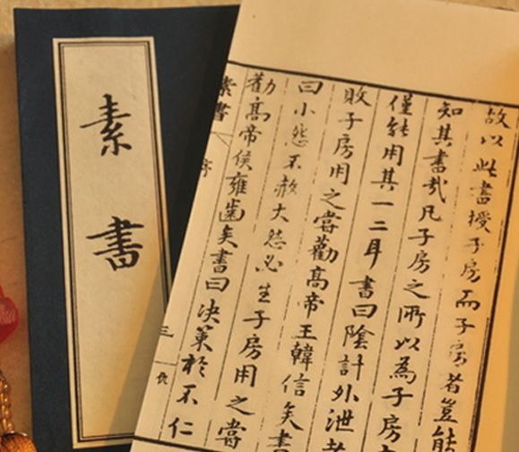
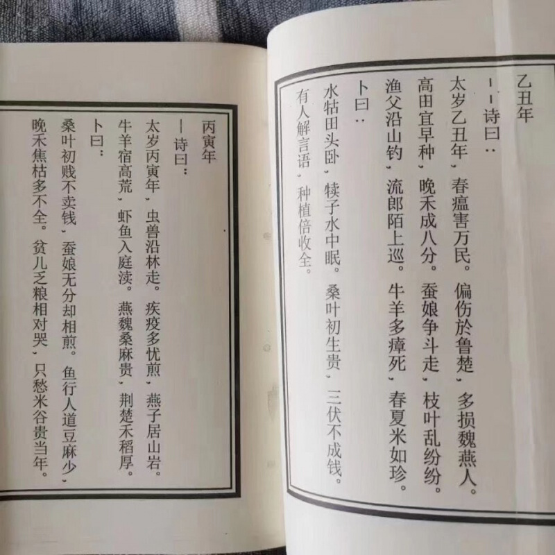

Last Updated:
十二月 15, 2023
认识人类起源---《爷爷的爷爷哪里来》好书推荐
陈奕洁
二月 13, 2022
土豆发芽观察日记
陈奕洁
二月 12, 2022

素书
陈凯
二月 4, 2022

黄帝地母经
陈凯
二月 12, 2021
苦乐观
陈凯
八月 24, 2020
b站在线学习网址合集
陈凯
八月 23, 2020
102个各行副业赚钱平台汇总
陈凯
八月 3, 2020
15条社会定律，看透人性
陈凯
六月 21, 2020
同步课程的新思路
陈凯
六月 12, 2020
github pages+阿里云域名绑定搭建个人博客
陈凯
四月 2, 2020
博客搭建
Previous
Authors
陈凯
Post: 11
陈奕洁
Post: 2
Tags
博客搭建
(1)
管理定律
(1)
网页实用JS
(1)
做视频
(1)